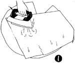
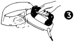
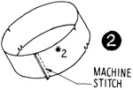
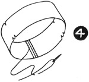
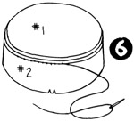
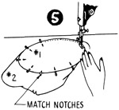
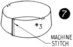
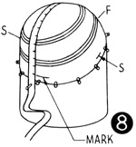
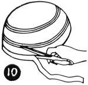
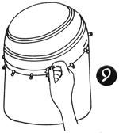

1952—How to Make Hats
by Ruby Carnahan
Felt Pattern hat a Three-Piece Crown and Felt Brim
MATERIAL REQUIRED
- Use a large 14"x 16" fur felt hood
- Pattern on page 78-79
- 3/4 of a yard of headband ribbon
Place crown pattern pieces on a fold of paper, trace and cut pattern double.
When making three-piece crown of fur felt, a crinoline foundation is not required.
Trace and cut each piece of brim pattern
CUTTING AND SEWING CROWN
Wrap felt hood in a damp towel for several hours before blocking.
(Illus. 1) Cut felt open on one side from bottom to top, and lay felt out flat on a pressing board and cover felt with a damp cloth. Steam press felt,, stretching felt as you steam press. Place all pieces of pattern on felt before marking. Mark around pattern (using tailor's chalk), cut out felt on this line.
(Illus. 2) Join ends of No. 2 piece of felt, stitch and steam press seam open (Illus. 3).
(Illus. 4) Sew each side of seam by hand, using pick stitches close to seam.
(Illus. 5) Match notches and join No. 2 and No. 1 pieces of felt, stitch (Illus. 6) and steam press seam open. Sew each side of seam down by hand, using pick stitches close to seam.
(Illus. 7) Join ends of No. 3 piece of felt, stitch and steam press seam open (Illus. 3). Sew each side of seam by hand using pick stitches close to seam (Illus. 4). Match notches and join No. 2 and No. 3 pieces of felt, stitch and steam press seam open (Illus. 3). Sew each side of seam by hand using pick stitches close to seam (Illus. 4).
STEAMING AND FITTING CROWN
Put felt crown on utility head block wrong side out. Steam and pull felt down to fit block, and pin crown to block. (Illus. 8) Measure your head from back to front and from side to side the depth felt crown is to be and mark these measurements on felt.
Draw a line around block on felt (Illus. 9). When crown is dry remove crown and trim off excess felt on crown 1/2" below line (Illus. 10).
This crown can be used with many different styled brims.
BRIM FOR THREE PIECE CROWN
Lay each piece of brim pattern on felt and mark around pattern (using tailor's chalk) on felt and cut out on line. Sew brim pieces together, back and front, using a furring stitch. Press front and back of brim flat with a steam iron or damp cloth and iron.
WIRING BRIM
Measure a wire to fit edge of brim and join wire with a wire joiner. Turn felt on edge over wire 1/4" with joiner in back. Baste around edge of brim. Sew down using an overcast stitch.
SEWING CROWN AND BRIM TOGETHER
Match front markings on brim and crown, pin together. Sew together. Turn seam around headsize up and slip hat on Utility block and steam and pin to block and let dry.
Finish headsize with a swirled headband.
Instructions on page 45.